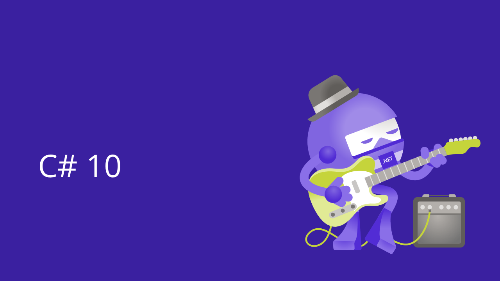
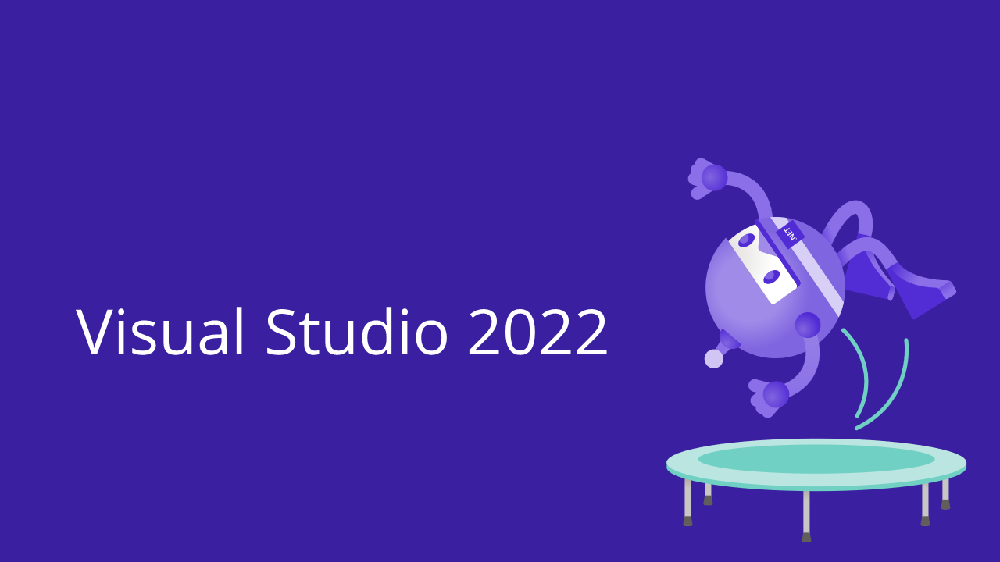
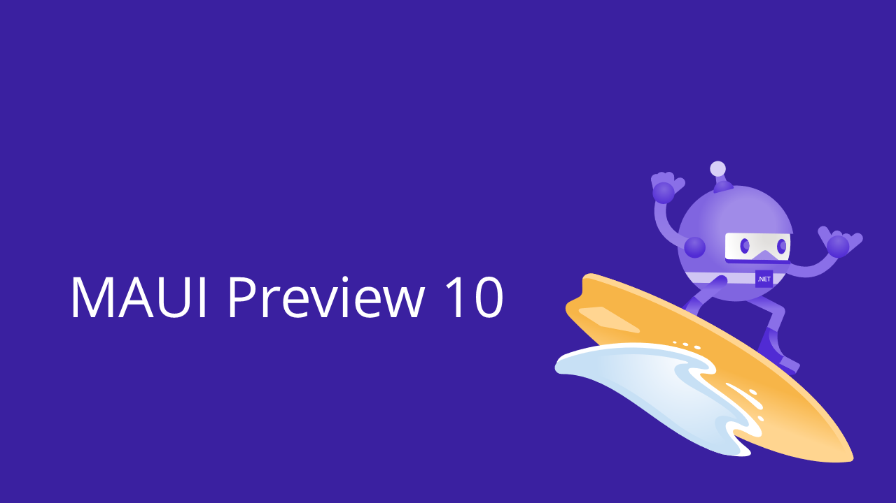
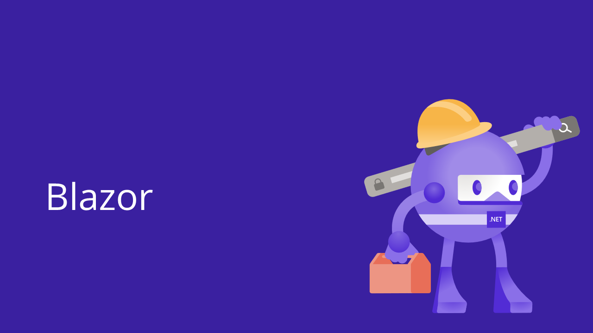

.NET Conf recap
There have been a tonne of announcements at .NET Conf 2021 including .NET 6, C# 10, Visual Studio 2022, and MAUI Preview 10. This post is a recap of the most important parts for Xamarin, Blazor and Maui developers. For those of you who don’t want to sit through hours of videos, I have watched the sessions and linked the resources so you don’t have to.
The purpose of this post is not to summarize the content from the various announcements, but rather point you (and me) to the best resources to get up to speed with all the new goodness. People like to consume different types of information, so I’ve broadly classified them into: Websites (🌐), Blogs and Articles (📄) and Videos (📺).
.NET Conf
.NET 6
- 📄 Announcing .NET 6 — The Fastest .NET Yet - Richard Lander.
This is an absolute monster of a blog post that covers a huge number of the .NET 6 release features. If you only have time to read one article, then make it this one.
- 📄 Performance Improvements in .NET 6 - Stephen Toub
This is a very deep dive into the performance work in .NET 6. Not for the faint of heart.
- 📄 .NET and .NET Core Support Policy
What you need to know about the support lifecycle of .NET versions. The take away, is that .NET 6 is here for a long time, and you are going to end up migrating here at some point ;-)
- 🌐 .NET Upgrade Assistant
Speaking of migrating to .NET 6, this tool is here to help you. For many projects it might be a matter of flipping a setting in a project file, but for others (particularly older .NET Framework projects) this command line tool is for you.
- 📺 .NET Conf Keynote - Scott Hunter + Friends - ⏰ 70 mins
This keynote by Scott Hunter and Friends covers all the key announcements around .NET 6. If you are going to watch only one video, make it this one.
- 📺 Speed up your .NET development with Hot Reload -
Dmitry Lyalin - ⏰ 28 mins
This looks at the incredibly useful Hot Reload and how it works in Visual Studio 2022 with demos across .NET MAUI, Blazor, ASP.NET Core and desktop apps.

- 📄 Welcome to C# 10 - Kathleen Dollard
C# 10 has some lovely features to make your code cleaner, like
Gobal UsingsandFile-scoped namespaces. This post, covers the most important C# 10 improvements. - 📺 What’s new in C# 10 - Mads Torgersen & Dustin Campbell - ⏰ 30 mins
Mads and Dustin for a discussion and demonstration of the features of C #10 with a all-code, no-slide approach we all love ;-)

- 📄 Visual Studio 2022 now available - Amanda Silver
The announcement blog of VS 2022.
- 📄 What’s New in Visual Studio 2022 for Mac - Docs Release list
Visual Studio 2022 for Mac is still in Preview, but that’s not going to stop you Mac people from using it. This page is a good place to look at for the latest release notes.
- 📺 Welcome to Visual Studio 2022 – Scott Hanselman and friends - ⏰ 33 mins
This is the keynote for the launch of VS2022. It’s a nice relaxed overview of the key features. This is what I imagine having a party over to Scott’s house would be like.
- 📺 Visual Studio 2022 for .NET XAML developers - Dmitry Lyalin - ⏰ 19 mins
I admit it, I still like XAML and VS 2022 has some nice features for XAML geeks that apply to WPF and Xamarin / MAUI projects.
- 📺 Building cross platform apps with .NET MAUI in Visual Studio 2022 - Maddy Leger Montaquila - ⏰ 17 mins
Maddy looks at the Preview version of VS 2022 which has all the goodness for us MAUI developers.
- 📺 What’s new for Visual Studio 2022 for Mac - Jordan Matthiesen - ⏰ 19 mins
Learn about all the new capabilities and improvements in Visual Studio for Mac.
- 🌐 Visual Studio Youtube Channel
The official youtube channel for VS. Most interesting here is the Tips and Tricks playlists but there is also some other gems on the site as well.

- 📄 Announcing .NET MAUI Preview 10 - David Ortinau
.NET Multi-platform App UI (MAUI) Preview 10 is now available atop the stable release of .NET 6, and you can get it in the preview channel of Visual Studio 2022. This new release includes the merging of the remaining Windows App SDK dependencies, and ongoing progress to complete the remaining controls and control features. Might be time to start getting on the MAUI train!
- 📄 .NET MAUI Roadmap
Useful resource to keep on track of the upcoming releases of MAUI.
- 📄 .NET MAUI Wiki
Useful resource for quick docs and migration information.
- 📺 Introduction to .NET MAUI - Maddy Leger Montaquila - ⏰ 29 mins
Join Maddy, .NET MAUI Program Manager, to get a first look of .NET MAUI in .NET 6 and learn how you can start using it today.
- 📺 Drawn controls in .NET MAUI - Javier Suárez Ruiz - ⏰ 30 mins
Learn all the basics of .NET MAUI Graphics, a new cross-platform graphics library included with .NET MAUI as well as use this library to create fully drawn controls. We will see what advantages brings this new way of creating controls and we will analyze concepts such as performance and other related aspects.
- 📺 Welcome to Maui Community Toolkit - Pedro Jesus, Gerald Versluis - ⏰ 29 mins
Everything that you need to know about the Maui Community Toolkit and the migration between the old (but gold) Xamarin Community Toolkit.

- 📄 Announcing ASP.NET Core in .NET 6 - Daniel Roth
This blog post covers all the new stuff in ASP.NET Core, but also a section focused on Blazor Improvements.
- 🌐 Blazor Fluent UI Components
Want your Blazor app to have the Windows 11 Fluent experience? Yeah, me neither, but you can!
- 📺 Enterprise-grade Blazor apps with .NET 6 - Daniel Roth - ⏰ 30 mins
A look at the new support for Hot Reload, error boundaries, state preservation during prerendering, faster file uploads, query string handling, adding page metadata, and integrating Blazor components into existing JavaScript based apps.
- 📺 Response and Adaptive Tactics for Blazor Applications - Ed Charbeneau - ⏰ 27 mins
Learn about CSS techniques like CSS Grid, Flexbox and media queries. We will also explore techniques for adaptive the user interface at runtime for maximum control. These tactics apply to Blazor WASM, Server, and Blazor Hybrid.
- 📺 Next-generation Blazor components with .NET 6 - Daniel Roth, Javier Calvarro Nelson - ⏰ 31 mins
A look at the new improvements to the Blazor component model, including required component parameters, generic type inference from ancestor components, JavaScript initializers, and handling of static web assets.
- 📺 New Blazor WebAssembly capabilities in .NET 6 - Steve Sanderson - ⏰ 31 mins
Want your mind blown 🤯 - then check out this session which deals with embedding native dependencies into Blazor.
- 📺 Building A Production Ready Blazor WASM App - Steve Peirce - ⏰ 29 mins
Steve talks about writing production ready code that includes: How to test your Blazor application, How to improve performance of your application, and Common tips and tricks.
- 📺 .NET MAUI Blazor - Build Hybrid Mobile, Desktop, and Web apps - Daniel Roth - ⏰ 5 mins
Quick overview of the what/why of the MAUI / Blazor love child Blaui!
- 📺 Build cross-platform native apps with .NET MAUI and Blazor - Eilon Lipton - ⏰ 29 mins
The power of Blazor is coming to native apps on desktop and mobile devices! Use existing Blazor web components and get the power of native apps, or supercharge your existing native apps with the power and reach of Blazor with the new BlazorWebView control for .NET MAUI, WPF, and WinForms.
Well, that’s a lot of links, but hopefully you find it useful to get up to speed with all the new goodness.